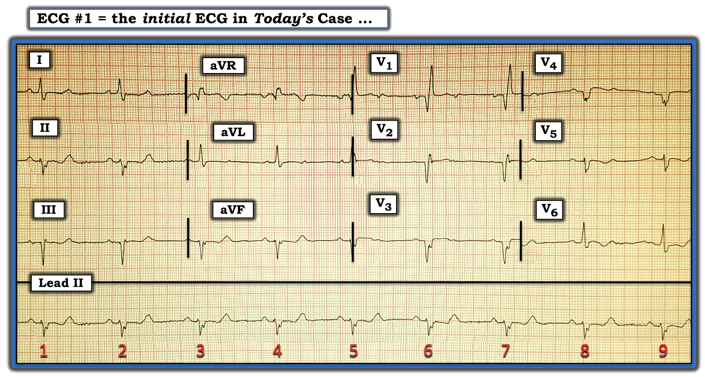
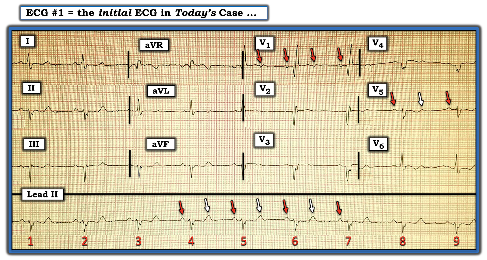
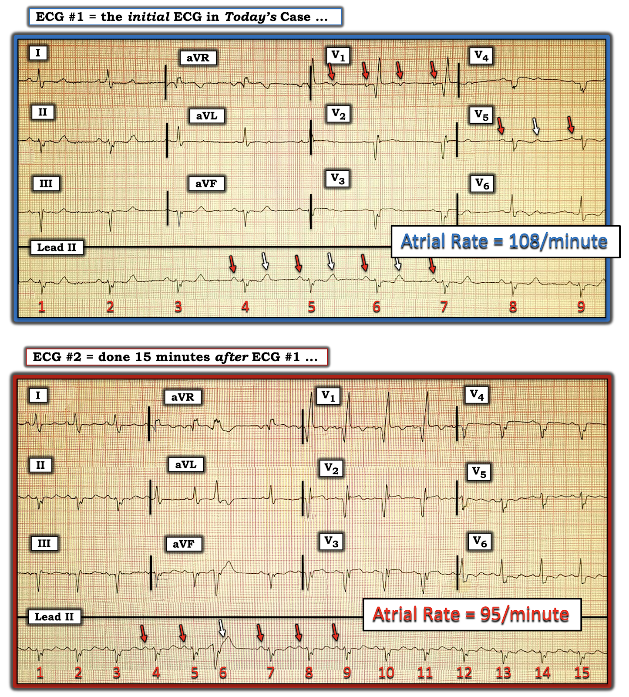

ECG Blog #303 (EQC) — Bệnh nhân bị ngất
=========================================
Bản ghi hôm nay là một ECG “Quick Case” ( = EQC) nữa — trong đó tôi sẽ trình bày quá trình suy nghĩ của mình theo cách “tiết kiệm thời gian” hơn (với mục tiêu giúp bạn rút ngắn thời gian đọc điện tâm đồ xuống còn vài giây thay vì vài phút)! Các liên kết liên quan nằm ở cuối trang.
=========================================
Ca bệnh hôm nay:
Điện tâm đồ 12 chuyển đạo và dải nhịp (rhythm strip) chuyển đạo II dài trong Hình-1 — được ghi ở một phụ nữ lớn tuổi “đột nhiên ngất xỉu”. Không đau ngực.
CÂU HỎI:
- BẠN sẽ diễn giải nhịp và điện tâm đồ 12 chuyển đạo này như thế nào?
- Bạn nghĩ điều gì có thể đã xảy ra?


SUY NGHĨ CỦA TÔI về điện tâm đồ ban đầu ở Hình-1:
Nhịp đều, tần số ~50-55/phút. QRS rộng. Nhìn vào dải nhịp chuyển đạo II dài — có sóng P đi trước mỗi phức bộ QRS với khoảng PR cố định (và bình thường) — vì vậy ít nhất cũng có một phần dẫn truyền.
- Nói chung — chuyển đạo tốt nhất để nhận diện hoạt động nhĩ là chuyển đạo II. Chuyển đạo II còn có thêm lợi thế là cho biết có hay không có nhịp xoang. Nếu là nhịp xoang, sóng P luôn luôn phải dương ở chuyển đạo II. Ngoại lệ duy nhất của quy tắc chung này — là khi có tim sang phải (dextrocardia) hoặc đảo ngược điện cực.
- Tuy vậy — có những lúc hoạt động nhĩ lại thấy rõ hơn ở các chuyển đạo khác. Theo kinh nghiệm của tôi — chuyển đạo tốt thứ 2 để quan sát hoạt động nhĩ là V1. Tiếp theo là III, aVR, aVF — rồi nhìn nhanh qua 7 chuyển đạo còn lại.
- BẠN thấy gì ở V1?
Hoạt động nhĩ bổ sung:
Dù rất dễ bỏ sót hoạt động nhĩ bổ sung nếu chỉ nhìn vào dải nhịp chuyển đạo II dài — chuyển đạo V1 cho thấy rõ ràng rằng có 2 sóng P cách đều nhau cho mỗi phức bộ QRS (các mũi tên ĐỎ trong Hình-2).
- Việc các sóng P này ở V1 cách đều nhau (các mũi tên ĐỎ) — cho biết nhịp xoang nền vẫn tiếp diễn suốt bản ghi. Có blốc AV 2:1 (tức là 2 sóng P cho mỗi QRS) — điều này xác định nhịp là một dạng nào đó của blốc AV độ 2.
- Vì tần số thất là 54/phút — nên tần số nhĩ gấp đôi, tức là 108/phút.
- Lý do sóng P thứ 2 có thể không được nhận ra ngay từ đầu trên dải nhịp chuyển đạo II dài — là vì nó ẩn trong sóng T đi trước (các mũi tên TRẮNG trên chuyển đạo II dài).
- Mặc dù sóng P thứ 2 trong mỗi khoảng R-R dễ nhận ra nhất ở V1 — các chuyển đạo khác cũng gợi ý điều này (tức là các mũi tên ĐỎ & TRẮNG ở V5).
- ĐIỂM THEN CHỐT (PEARL) #1: Dùng compa đo (calipers) giúp dễ dàng xác nhận tính đều của nhịp nhĩ nền. Nhờ đó loại trừ được những thực thể như nhịp đôi nhĩ (trong đó cứ cách một sóng P lại có một sóng P là PAC). Tuy vậy — thường gặp sự thay đổi nhẹ của khoảng P-P ở bệnh nhân có blốc AV độ 2 hoặc độ 3. Hiện tượng này gọi là loạn nhịp xoang theo pha thất (“ventriculophasic” sinus arrhythmia). Phần lớn trường hợp có thể nhận ra thực thể này dựa vào việc khoảng P-P “kẹp” một phức bộ QRS ở giữa thường hơi ngắn hơn khoảng P-P không chứa phức bộ QRS nào (được cho là do tuần hoàn cải thiện nhẹ nhờ cung lượng tim tạo ra từ QRS nằm giữa 2 sóng P, vốn khởi phát co bóp cơ học).


Còn BẠN diễn giải điện tâm đồ 12 chuyển đạo thế nào?
Giờ khi đã xác định nhịp ở Hình-2 là nhịp xoang với blốc AV độ 2 và dẫn truyền AV 2:1 — vẫn còn câu hỏi là diễn giải phần còn lại của điện tâm đồ 12 chuyển đạo như thế nào.
- Như đã nói — phức bộ QRS rộng (có lẽ ~0.12 giây ở Hình-2). Hình dạng QRS phù hợp với RBBB (tức là hình ảnh “tương đương” RBBB dưới dạng QR ở chuyển đạo I — và sóng S tận rộng ở cả chuyển đạo I và V6) hoàn toàn.
- Cũng có LAHB, dựa vào các phức bộ QRS âm là chủ yếu ở từng chuyển đạo thành dưới. Vì vậy, có blốc hai phân nhánh ( = RBBB/LAHB).
- Cũng có bằng chứng của các nhồi máu cũ. Việc không có sóng r khởi đầu ở chuyển đạo III (tức là dạng Qr) — không phải do LAHB đơn thuần, và cho thấy nhồi máu thành dưới cũ ở một thời điểm nào đó.
- ĐIỂM THEN CHỐT (PEARL) #2: Thường khó phân biệt giữa LAHB có hoặc không có nhồi máu thành dưới cũ. Đó là vì vectơ khử cực ban đầu của mỗi thực thể này “đối nghịch” nhau — đến mức sóng r khởi đầu của LAHB có thể ngăn không cho ghi được sóng Q của nhồi máu thành dưới — và — sóng Q của nhồi máu thành dưới có thể ngăn không cho ghi được sóng dương khởi đầu (sóng r) của blốc phân nhánh. Tuy vậy, trong ca hôm nay — các MANH MỐI cho biết cả LAHB lẫn nhồi máu thành dưới cũ đều đã xảy ra ở một thời điểm nào đó là: i) Sóng Q khởi đầu rộng ở chuyển đạo III (vốn không có với LAHB đơn thuần); ii) Phân mảnh QRS ở cả chuyển đạo II và aVF (tức là thêm “khía” trên sườn lên của sóng S) — và sóng r’ mà ta thấy ở chuyển đạo III (tức là bình thường với LAHB đơn thuần, có dạng rS ở cả 3 chuyển đạo thành dưới — chứ không phải Qr như ta thấy ở đây).
- ĐIỂM THEN CHỐT (PEARL) #3: Cũng đã có nhồi máu trước vách ở một thời điểm nào đó — thể hiện qua các sóng Q lớn ở nhiều chuyển đạo trước tim. Với RBBB đơn thuần — phải có phức bộ ba pha (rsR’ hoặc rSR’) ở V1. Sóng Q sâu, rộng mà ta thấy ở V1 cho biết chắc chắn đã có nhồi máu trước vách trước đó.
- Sóng Q lớn, cùng với phân mảnh (khía) bổ sung cũng thấy ở V2, V3 và V4. Ngoài nhồi máu trước vách cũ lan rộng — bệnh nhân này rõ ràng có bệnh mạch vành đáng kể (tức là phân mảnh trong bối cảnh lâm sàng này gợi ý “sẹo” lan rộng, do nhồi máu và/hoặc bệnh cơ tim).
- Về đánh giá bất thường ST-T — không có gì trông cấp tính cả! Thay vào đó, có ST-T dẹt không đặc hiệu — với ST chênh lên nhẹ-nhưng-thật ở V2, V3, V4.
- ĐIỂM THEN CHỐT (PEARL) #4: Lưu ý rằng đoạn ST ở V1 đẳng điện. Bình thường với RBBB đơn thuần — ST-T phải “hướng ngược chiều” với sóng cuối cùng của QRS ở 3 chuyển đạo MẤU CHỐT (tức là vì sóng cuối cùng ở V1 là sóng R dương — nên bình thường phải có ST-T chênh xuống phần nào ở V1 khi có RBBB đơn thuần không kèm yếu tố phức tạp nào). Việc ST-T ở V1 đẳng điện thay vì ít nhất chênh xuống nhẹ là không "bình thường" với RBBB.
ĐIỀU CỐT LÕI: Ngoài blốc AV độ 2 với dẫn truyền AV 2:1 — đã có nhồi máu thành dưới và trước vách ở một thời điểm nào đó. Mặc dù có ST chênh lên phần nào ở V2,V3,V4 (và đoạn ST dẹt không phù hợp phần nào ở V1) — mức độ này là tối thiểu. Các chuyển đạo khác cho thấy ST-T dẹt không đặc hiệu và sóng T đảo ngược nông ở V5,V6 — vì vậy không có gì trong số này trông cấp tính. Thay vào đó — ST chênh lên nhẹ có thể phản ánh một phình thất trái.
==============================
Ca bệnh tiếp diễn:
Điện tâm đồ #2 được ghi 15 phút sau điện tâm đồ #1 (xem Hình-3).
CÂU HỎI:
- Điều gì đã xảy ra trong 15 phút kể từ điện tâm đồ #1?
- “Mức độ” blốc AV có cải thiện không?
- GỢI Ý: TẠI SAO tôi lại tính tần số nhĩ ở mỗi bản ghi?


TRẢ LỜI:
Không còn dẫn truyền AV 2:1 ở điện tâm đồ #2. Thay vào đó — là nhịp xoang với dẫn truyền AV 1:1 (các mũi tên ĐỎ) — và một PVC ( = nhát #6).
- Tôi nghi rằng có một sóng P xoang đúng lúc ẩn trong ST-T của nhát #6 ở điện tâm đồ #2.
- Về cơ bản không có thay đổi nào về hình dạng QRS hay hình dạng ST-T giữa 2 bản ghi.
- Tần số nhĩ đã chậm lại đôi chút ở điện tâm đồ #2 (tức là từ 108/phút — xuống 95/phút).
ĐIỂM THEN CHỐT (PEARL) #5: Điều thường bị bỏ qua là ảnh hưởng tiềm tàng của tần số nhĩ lên dẫn truyền AV. Trong ca hôm nay — nhiều khả năng “mức độ” blốc AV không “nặng hơn” ở điện tâm đồ #1. Thay vào đó — có thể đơn giản là nút AV bị bệnh (ở bệnh nhân lớn tuổi này, người rõ ràng có bệnh tim nền nặng) có thể dẫn truyền 1:1 ở tần số xoang 95/phút — nhưng khi tần số nhĩ tăng lên một chút (tức là lên 108/phút) — thì nó chỉ có thể dẫn truyền 1 trong mỗi 2 xung xoang xuống thất.
- Với tiền sử ngất ở bệnh nhân lớn tuổi này — cùng với sự hiện diện của blốc hai phân nhánh (RBBB/LAHB) kèm các nhồi máu cũ — và các giai đoạn blốc AV 2:1 — có thể cần đặt máy tạo nhịp vĩnh viễn.
- Theo dõi điện tâm đồ liên tục có thể giúp ghi nhận chỉ định đặt máy tạo nhịp.
- Siêu âm tim và thông tim có thể được chỉ định để tìm phình thất trái — xác định chức năng thất trái — và để làm rõ giải phẫu trong trường hợp có bệnh mạch vành “sửa được”, mà việc sửa có thể cải thiện bệnh lý hệ thống dẫn truyền của bệnh nhân.
ĐIỂM THEN CHỐT CUỐI CÙNG (PEARL): Chúng ta không thể phân biệt chắc chắn giữa blốc AV độ 2 loại Mobitz I và Mobitz II khi có dẫn truyền AV 2:1. Đó là vì ta không bao giờ thấy 2 nhát được dẫn truyền liên tiếp nhau — nghĩa là ta không bao giờ biết được liệu khoảng PR có dài ra trước khi rớt một nhát NẾU có cơ hội làm vậy hay không (như điển hình của blốc AV độ 2 thể Mobitz I).
- Mobitz I phổ biến hơn Mobitz II rất nhiều. Tuy vậy — khi phức bộ QRS rộng — khoảng PR của các nhát được dẫn truyền bình thường — và bệnh nhân rõ ràng có bệnh tim cấu trúc nền đáng kể (như thấy trong ca hôm nay) — thì khả năng rối loạn dẫn truyền là Mobitz II tăng lên. Dù vậy, bất kể blốc là Mobitz I hay Mobitz II — bệnh nhân này vẫn có thể cần tạo nhịp vĩnh viễn vì tất cả các lý do đã nêu ở trên.
==================================
Lời cảm ơn: Xin cảm ơn 유영준 (từ Seoul, Hàn Quốc) đã cho tôi biết ca này và cho phép tôi sử dụng bản ghi này.
==================================
==============================
Các bài ECG Blog liên quan đến bài hôm nay:
- ECG Blog #204 — Ôn lại chẩn đoán BBB trên điện tâm đồ (được ôn trong Video Pearl).
- ECG Blog #203 — Ôn lại cách tiếp cận dễ dùng đối với các blốc phân nhánh và blốc hai phân nhánh.
- ECG Blog #236 — Ôn lại 3 loại blốc AV độ 2.
- ECG Blog #271 — Ôn lại khái niệm thiếu máu cục bộ dưới nội tâm mạc lan tỏa.
- ECG Blog #162 — Ôn lại một ca LBBB kèm STEMI cấp.
- ECG Blog #221 — Cách chẩn đoán nhồi máu cơ tim cấp khi có RBBB (được ôn trong Audio Pearl).
- ECG Blog #298 — Ôn lại một ca RBBB/LAHB + nhồi máu cơ tim cũ.